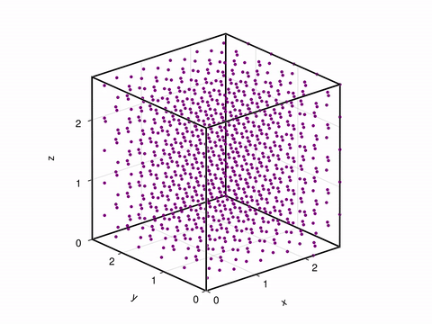

Support for Molly.jl
KIM_API provides out of the box extensions compatible with Molly.jl, a molecular dynamics simulation package in Julia. To use KIM models in Molly.jl, you can create a KIMCalculator and pass it to the general_inters field of a System. Here is an example of how to set up and run a molecular dynamics simulation of silicon using the Stillinger-Weber potential from the KIM repository with Molly.jl:
using Molly
using KIM_API
using StaticArrays
using Unitful: Å, ustrip
using UnitfulAtomic
# Conventional lattice constant for Si (L in Å)
a0 = 5.431u"Å"
repeats = (2, 2, 2) # 2×2×2 supercell → 8 × 8 = 64 atoms
# Fractional coordinates for diamond cubic conventional cell
diamond_basis = SVector.([
(0.0, 0.0, 0.0),
(0.5, 0.5, 0.0),
(0.5, 0.0, 0.5),
(0.0, 0.5, 0.5),
(0.25, 0.25, 0.25),
(0.75, 0.75, 0.25),
(0.75, 0.25, 0.75),
(0.25, 0.75, 0.75),
])
atoms = Atom[]
coords_ = SVector{3, typeof(1.0u"Å")}[] # stores SVector{3} with Å units
a0_val = ustrip(Å, a0) # lattice constant as plain Float64
for (ix, iy, iz) in Iterators.product(0:repeats[1]-1, 0:repeats[2]-1, 0:repeats[3]-1)
shift = SVector(ix, iy, iz)
for bf in diamond_basis
push!(atoms, Atom(atom_type="Si", mass=28.0855u"u"))
cart = SVector((bf .+ shift) .* a0_val) * Å # convert to Å
push!(coords_, cart)
end
end
velocities = zero(coords_) .* (1.0u"ps"^-1)
boundary = CubicBoundary(repeats[1] * a0) # 2a0 along each axis
calc = KIM_API.KIMCalculator(
"SW_StillingerWeber_1985_Si__MO_405512056662_006";
units = :metal,
)
ggers=(
temp=TemperatureLogger(10),
coords=CoordinatesLogger(10),
)
sys = System(
atoms = atoms,
coords = coords_,
boundary = boundary,
velocities = velocities,
general_inters = (kim = calc,),
force_units = u"eV/Å",
energy_units = u"eV",
loggers = loggers,
)
temp = 298.0u"K"
simulator = VelocityVerlet(
dt = 0.002u"ps",
coupling = AndersenThermostat(temp, 1.0u"ps"),
)
simulate!(sys, simulator, 10000)
# Optional: visualize the trajectory
using GLMakie
visualize(sys.loggers.coords, boundary, "sim5x5x5.mp4")

Please consult OpenKIM and Molly.jl documentation for more details on available models and simulation options.